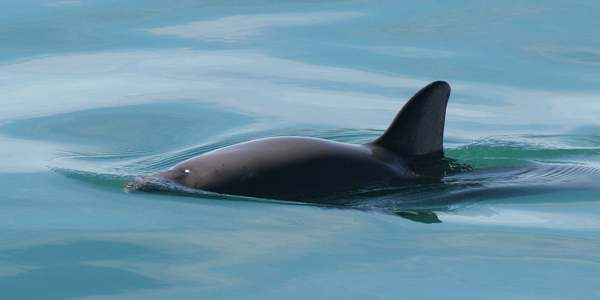

Vaquita marina
A vaquita marina é un cetáceo que foi descoberto em 1958, mas acredita—se que só existam menos de 100 exemplares vivos da espécie. Ela tem um corpo similar ao de um golfinho. Todas as vaquitas vivem na costa mexicana do Pacífico. O perigo que as ataca é a pesca de arrasto, que as captura sem que elas sejam o alvo específico. Cientistas asseguram que se elas não desaparecerem ainda este ano, até 2018 serão extintas, a não ser que se realizem ações para salvá-las.
Nome científico: Phocoena sinus
Comprimento: 1,2 – 1,5 m (Adulto)
Nível Trófico: Carnívoro
Peso: 43 kg (Adulto)
Classificação: Espécie
Classificação superior: Phocoena

Descrição
A vaquita é a menor e mais ameaçada espécie de cetáceo e é endêmica do extremo norte do Golfo da Califórnia. A espécie é distinguível pelos anéis escuros ao redor de seus olhos, manchas em seus lábios e uma linha que se estende desde suas barbatanas dorsais até sua boca. Suas costas possuem um cinza escuro que se desvanece na parte inferior branca. Conforme as vaquitas amadurecem, os tons de cinza ficam mais claros.[20] Em média, as fêmeas adultas têm um comprimento de 140,6 cm, em comparação com 134,9 cm dos machos. O tempo de vida, o padrão de crescimento, a reprodução sazonal e o tamanho dos testículos da vaquita são todos semelhantes à toninha-comum.[21] As barbatanas são proporcionalmente maiores que as de outros focenídeos, é mais alta e mais falcada. O crânio é menor e o rosto é mais curto e largo do que nos outros membros do gênero.
Comportamento
Vaquitas usam sons agudos para se comunicarem uns com os outros e para navegar através de seus habitats com ecolocalização. Eles geralmente se alimentam e nadam em um ritmo calmo. Evitam barcos e são muito evasivas. Vão à superfície para respirar e depois desaparecem rapidamente, o que dificulta sua observação. As vaquitas geralmente ficam sozinhas, a menos que sejam acompanhadas por um filhote,[22] o que significa que elas são menos sociais do que outras espécies de toninhas. Também podem ser mais competitivos durante o período de acasalamento[23]. É a única espécie pertencente à família Phocoenidae que vive em águas quentes [24]. Vaquitas são predadores não seletivos.[25]